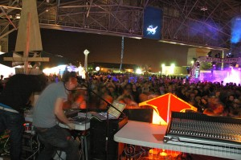

Ready to celebrate Yuri’s Night tonight? In Tucson, Arizona, the University of Arizona’s chapter of Students for the Exploration and Development of Space certainly is, as their stylish black-and-white poster proclaims. Carmen Austin, the poster’s designer and the club’s Outreach officer, describes their event thusly: “The place to be in Tucson on Saturday night is […]
What is Yuri’s Night?
Yuri’s Night is a global celebration of humanity’s past, present, and future in space. Yuri’s Night parties and events are held around the world every April in commemoration of April 12, 1961, the day of cosmonaut Yuri Gagarin’s first manned spaceflight, and April 12, 1981, the inaugural launch of NASA’s Space Shuttle.
Yuri’s Night events combine space-themed partying with education and outreach. These events can range from an all-night mix of techno and technology at a NASA Center, to a movie showing and stargazing at your local college, to a gathering of friends at a bar or barbecue.
In 2011, the 50th anniversary of human spaceflight, over 100,000 people attended 567 officially-recognized events in 75 countries on all 7 continents, while tens of thousands more watched the 12-hour live Yuri’s Night Global Webcast and participated online in the virtual world of Second Life.
(Photo Credit: Sam Coniglio)
Since 2001, Yuri’s Night has:
- Featured talks and presentations by Ray Bradbury, Will Wright, George Takei, Richard Garriott, Anousheh Ansari, and many others
- Been celebrated at the South Pole, Hayden Planetarium, and in orbit on the International Space Station
- Planted hundreds of “moon trees” around the world in collaboration with American Forests
- Received the “Best Presentation of Space” award from the Space Frontier Foundation
- Trained the next generation of space leaders for organizations such as the National Space Society, Virgin Galactic, and Space Florida
Anyone can start a Yuri’s Night event, and it’s completely free. Are you interested? Register your party today!
Learn about the Yuri’s Night Global Executive Team.